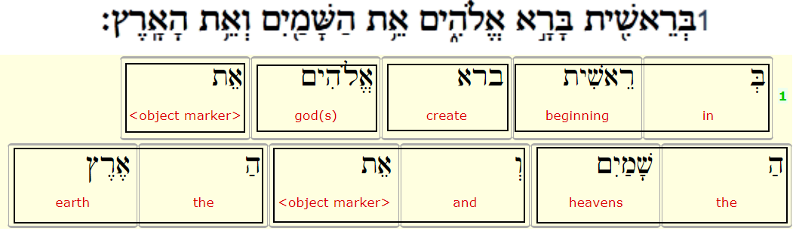

BHSaddons feature: wordboundary
| Feature type | Data type | Available for node types |
|---|---|---|
Node | String | word |
Feature description
This feature indicates word boundaries (spaces OR maqaf). The maqaf (מַקָּף) functions in Hebrew to connect two words.
Feature values
Either the number '1' (string) or empty. Frequency table for this feature:
| Value | Description | Frequency |
|---|---|---|
| <empty> | not the last node in a word | |
| 1 | last node in a word |
The following image shows the mapping of the surface text word to the word nodes in the BHSA Text-Fabric dataset, taking Genesis 1:1 as an example.

The image shows that the first Hebrew word (בְּרֵאשִׁ֖ית) maps to two word nodes in Text-Fabric: node 1 for the 'בְּ' and node 2 for the 'רֵאשִׁ֖ית' part. In order to clearly mark the surface level wordboundaries, the feature value for wordboundary is set to 'empty' for node 1 and set to '1' for node 2.
Example usage
The first verse of Genesis:
for w in F.otype.s("word")[:11]:
sec = T.sectionFromNode(w) # (book, chapter, verse)
b = F.wordboundary.v(w)
print(f'{sec} {b:1} {(F.g_word_utf8.v(w))}')
('Genesis', 1, 1) בְּ
('Genesis', 1, 1) 1 רֵאשִׁ֖ית
('Genesis', 1, 1) 1 בָּרָ֣א
('Genesis', 1, 1) 1 אֱלֹהִ֑ים
('Genesis', 1, 1) 1 אֵ֥ת
('Genesis', 1, 1) הַ
('Genesis', 1, 1) 1 שָּׁמַ֖יִם
('Genesis', 1, 1) וְ
('Genesis', 1, 1) 1 אֵ֥ת
('Genesis', 1, 1) הָ
('Genesis', 1, 1) 1 אָֽרֶץ